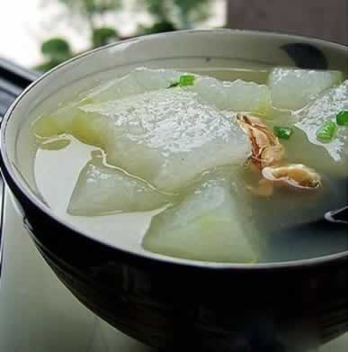
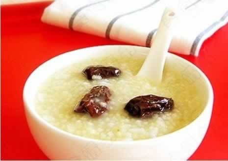

调整饮食，轻松应对孕吐
孕早期的许多准妈妈常在起床后或饭后感到恶心、呕吐等现象，妈妈们通常都会担心孕吐是否会影响胎儿的营养供给，希望能够尽量控制孕吐。其实，准妈妈们此时不必焦虑，对于孕吐保持顺其自然的心态便好（孕吐一般会于12周左右自然消失），以富于营养、清淡可口、容易消化为原则对饮食做适当调整。并以少食多餐为好，进食后不要精神紧张，可做一做深呼吸动作，或到室外散散步。反应较轻时，可增加食量，并增加食物的多样化，睡前可适量加餐，吃一些饼干等小食品，以满足孕妇和胎儿营养需要。
本周推荐尝试食谱1：
冬瓜鸭肉汤
推荐理由：这道汤益气养血、滋养五脏，而且清淡适口，可缓解早孕反应，并有助于准妈妈获得较为全面的营养素。
食谱原料：
鸭肉100克，冬瓜200克，胡萝卜、姜片适量。
制作方法：
1、把鸭肉清洗干净后斩件，凉水放入锅里，加几片姜片、葱苗煮开并不断把水面的血沫浮物去掉;
2、同时，把冬瓜、胡萝卜切块，并在另外一个炉头烧一锅开水，把准备好的鸭肉倒入，中火继续煮30分钟，加入冬瓜、胡萝卜继续中火煮20分钟转小火煮约30分钟，至鸭肉、冬瓜熟烂即可;
3、喝汤前根据个人口味加入适量的盐调味即可。
本周推荐尝试食谱2：
红枣小米粥
推荐理由：本粥品富含磷、铁、钙、脂肪、多种维生素及蛋白质等，适宜孕妇食用。
食谱原料：
小米与大枣各适量即可。
制作方法：
1.准备材料
2.小米洗净沥干水分，红枣洗净去核备用
3.洗净沥干水分的小米，放入平底锅，用小火炒
4.炒至干爽，并飘出香味即好
5.炒好的小米倒入砂锅，放入去核的红枣，倒入足量冷水
6.大火煮开，转小火熬至浓稠成粥（期间需要不停搅拌防止粘底）。